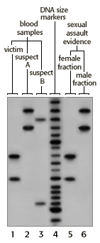

DNA Forensics Problem Set 2
Problem 7: Rape with Two Suspects
Correct!
|
The key portion of the autoradiograph from a single locus probe analysis of various DNA samples in a rape investigation is shown in the figure.
The DNA samples are as follows:
(1) known blood sample of victim If you are the DNA analyst, you should conclude that: |
 |
A. Both Suspects A and B are excluded as the source of the evidence.
B. Suspect A is excluded as the source of the evidence, but Suspect B cannot be excluded.
C. Suspect B is excluded as the source of the evidence, but Suspect A cannot be excluded. Because both bands of Suspect A match those found in the male fraction of the sex assault evidence, A cannot be excluded as a source of the DNA. However, because Suspect B has no matching bands with the male fraction of the vaginal swab, Suspect B can be excluded.
D. Neither Suspect A or B can be excluded as a source of the evidence.
E. Suspect B cannot be excluded as a source of the evidence. The results with Suspect A are inconclusive.


The Biology Project
University of Arizona
Tuesday, August 20, 1996
Contact the Development Team
http://www.biology.arizona.edu
All contents copyright © 1996. All rights reserved.